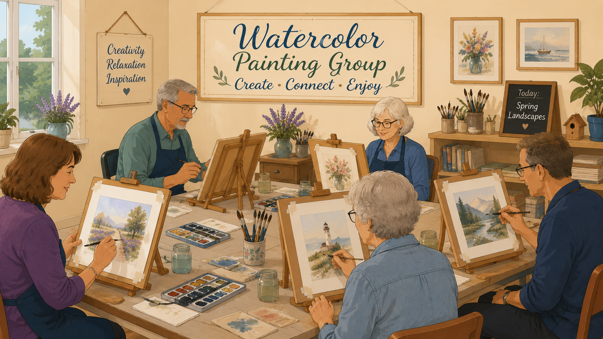

Garden Flag Painting
Add a splash of color to your site with a painted garden flag—the kind that slips onto a standard garden stand and greets every neighbor who rolls by. We meet on the fourth Tuesday of the month (during our short winter season) in Hall C to paint motifs like seasonal flowers, patriotic banners, cheery welcome lettering, or a snowbird wink. No fine-art résumé needed: you will get help with layout, base coats, and simple details so your flag looks happy from the street.
Typical schedule
Fourth Tuesday each month — not every week
Tuesdays (4th of the month)
10:30 AM – 12:00 PM
Season on the calendar: January 26 through February 23 each year. That window usually covers one or two fourth-Tuesday sessions—confirm the exact dates, themes, and any materials fee on the main park calendar.
Where we meet
On propertyHall C
Park address4900 N Mc Coll Rd, McAllen, TX 78504
About this activity
Garden flags are small enough to finish in a morning, big enough to make you smile when you round the corner home. Wear paint-friendly clothes; the group may share brushes and paints or ask you to bring a smock—check the announcement for the month.
Host: Judy Norton. Email the event coordinator for contact info or to reserve a blank flag if supplies are limited.